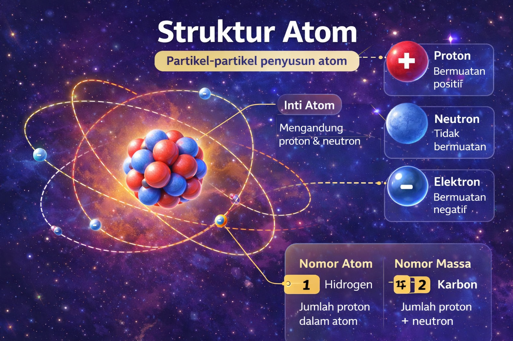

Atom adalah partikel sangat kecil yang menjadi penyusun semua materi di alam. Setiap atom memiliki inti atom yang berada di tengah. Inti atom tersusun dari proton yang bermuatan positif dan neutron yang tidak memiliki muatan listrik. Di sekitar inti atom terdapat elektron yang bermuatan negatif dan bergerak mengelilingi inti dalam lintasan tertentu yang disebut kulit atom. Jumlah proton menentukan jenis unsur suatu atom, sedangkan jumlah proton dan neutron menentukan massa atom. Dengan memahami struktur atom, kita dapat mengetahui bagaimana materi tersusun dan bagaimana reaksi kimia dapat terjadi.
← Kembali ke daftar IPA